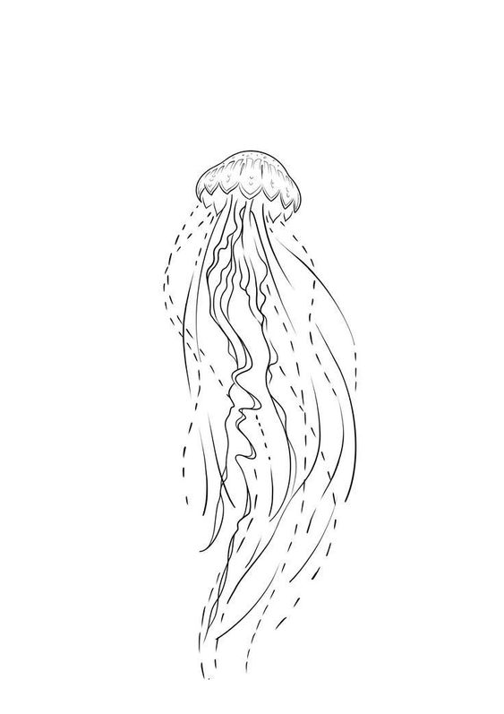
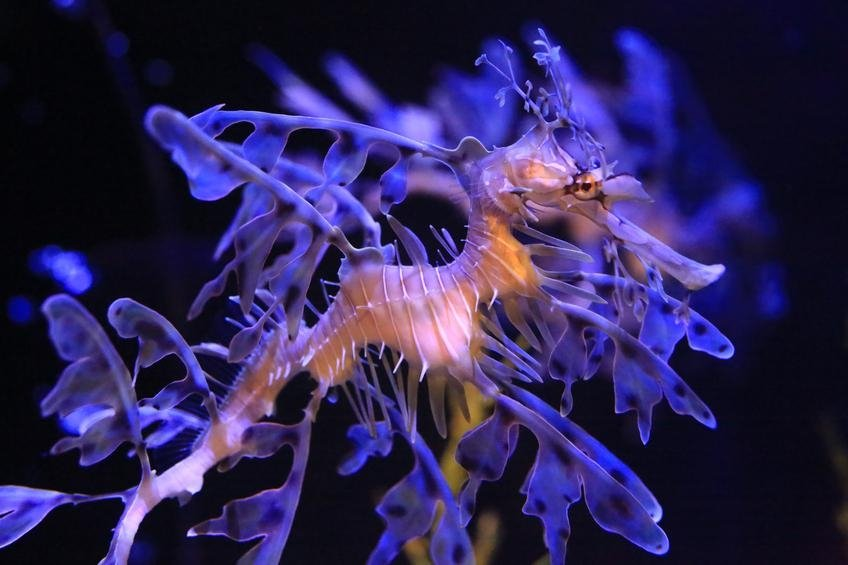

На външен вид Литовидния морски дракон много прилича на морското конче. Израстъците по тялото наподобяващи на листа допълнително му придават вид на митичен дракон. За разлика от морското конче представителите на вида не могат да свиват опашката към тялото си. Тялото им е малко по-дълго и достига до размери 20 — 24 cm. Листовидния дракон има дълга тръбовидна муцунка, завършваща с уста. Храни се с планктон, малки рибки, ракообразни и скариди. За разлика от други видове
 риба, хранещи се с подобни организми, този
няма зъби. Цветът
на тялото може да се променя в зависимост от диетата, възрастта, местоположението
и нивото на стреса у рибата. Камуфлажните израстъци не се
използват при движението на рибките. Тази роля е
изпълнявана от перките.
риба, хранещи се с подобни организми, този
няма зъби. Цветът
на тялото може да се променя в зависимост от диетата, възрастта, местоположението
и нивото на стреса у рибата. Камуфлажните израстъци не се
използват при движението на рибките. Тази роля е
изпълнявана от перките. | начало "Плюшени" крави Стъклена жаба Панда мравка Листовиден морски дракон |